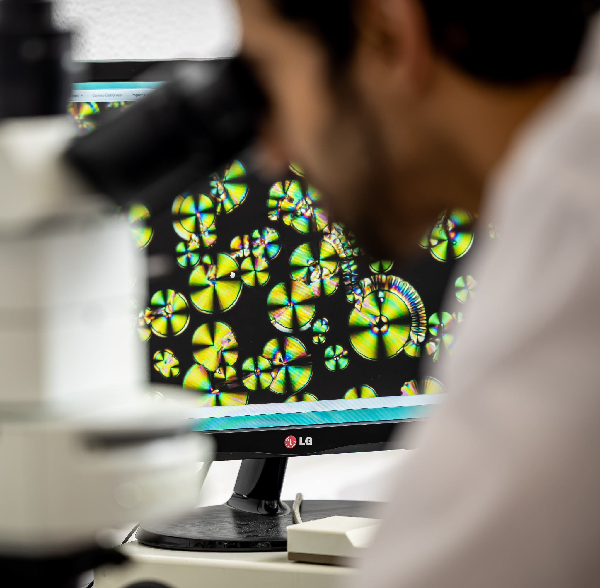
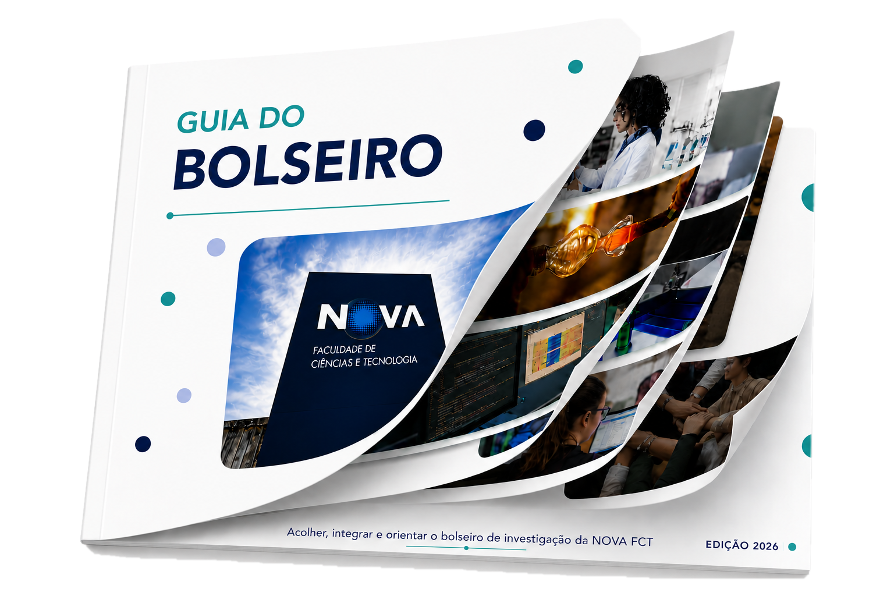
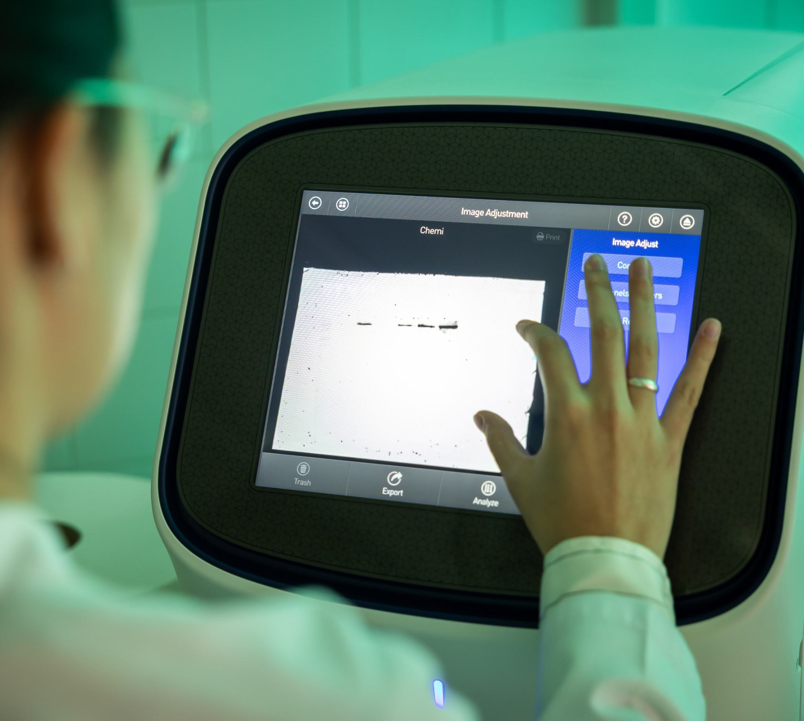
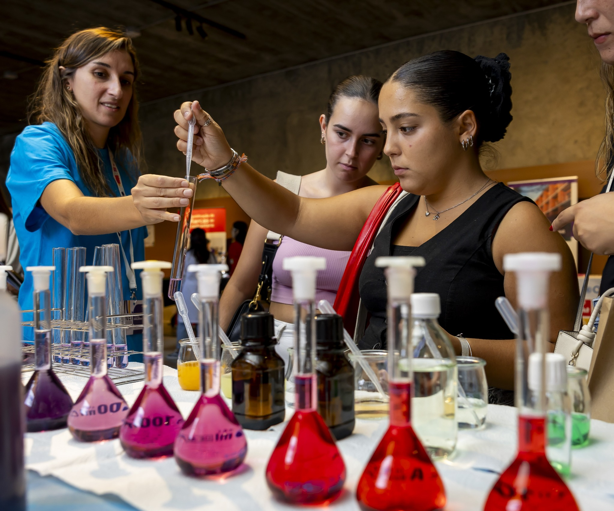
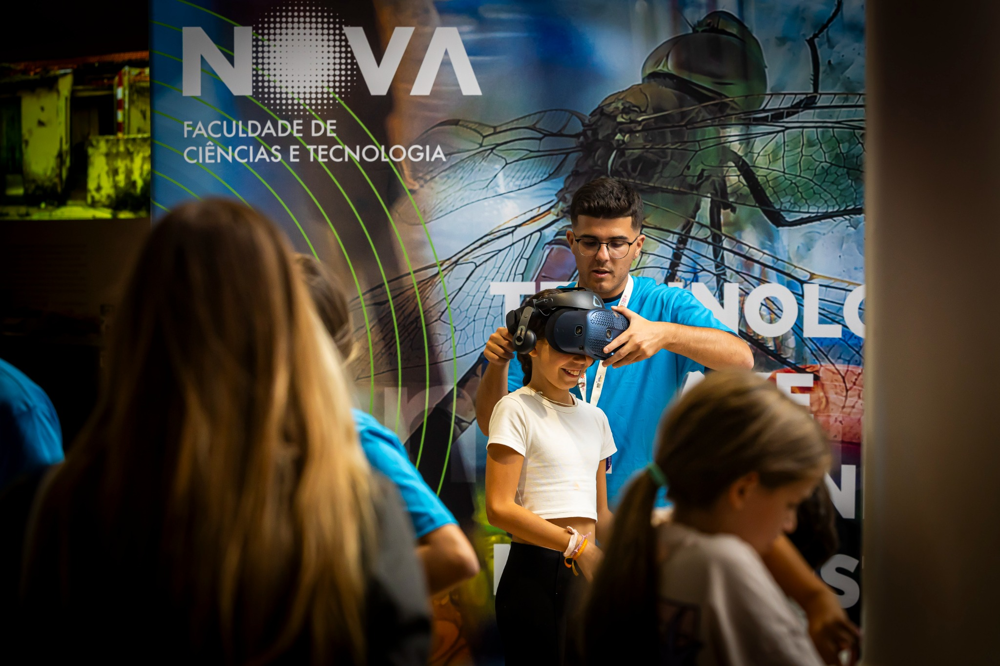
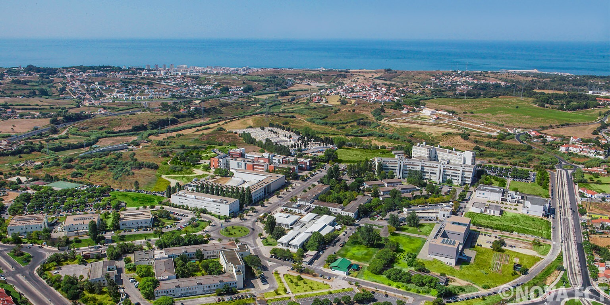
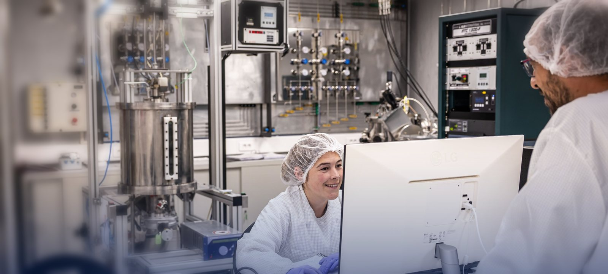

Dedicação à Investigação
Regime de dedicação exclusiva ao plano de trabalhos da bolsa de investigação, nos termos do Estatuto do Bolseiro de Investigação.
Acolher, integrar e orientar o(a) bolseiro(a) de investigação da NOVA FCT.

Este guia reúne o essencial para os primeiros passos na NOVA FCT: a bolsa de investigação, os direitos e deveres associados, o Campus e os contactos da DRH.
Destina-se exclusivamente aos(às) bolseiros(as) cujo concurso foi aberto e conduzido pela NOVA FCT, desde a publicação do aviso de abertura do concurso/edital até à contratação.
Destina-se a estudantes do ensino superior que pretendam iniciar-se em atividades de investigação científica e tecnológica, integrando equipas, projetos ou ambientes científicos.
Podem candidatar-se estudantes inscritos em:
Destina-se ao desenvolvimento de atividades de investigação científica integradas em projetos, unidades de investigação ou planos de trabalhos específicos.
Podem candidatar-se estudantes inscritos em:
Destina-se a titulares do grau de doutor que desenvolvam atividades de investigação científica avançada, nos termos previstos no enquadramento regulamentar aplicável.
O ambiente de investigação que a NOVA FCT procura proporcionar ao(à) bolseiro(a).
Investigação com propósito.




O Campus de Caparica fica no concelho de Almada, na margem sul do rio Tejo. Lisboa fica na margem norte.
Campus de Caparica · Quinta da Torre · 2829-516 Caparica · Portugal
Passe de transporte. O passe Navegante Metropolitano é válido em todos os transportes destes percursos (Metro de Lisboa, barco, Fertagus e Metro Sul do Tejo). Para deslocações diárias, compensa face aos bilhetes avulsos. Navegante ↗
Duração. A partir do centro de Lisboa, conte com cerca de 1 hora até ao Campus. Use «Abrir navegação» para saber o tempo exato à hora da viagem.
Percursos indicativos. Consulte os operadores antes da viagem para confirmar ligações, acessibilidade, horários e tarifas.
Um ambiente onde a investigação, a aprendizagem, o convívio e o bem-estar se complementam, contribuindo para uma experiência académica e pessoal enriquecedora.

O Portal do Bolseiro é a página do Núcleo do Bolseiro com a informação de que precisa ao longo da bolsa:
Abre num novo separador; o Guia continua aberto.
Encontre o serviço de que precisa e consulte a informação diretamente na página oficial.
As páginas externas podem estar disponíveis apenas em português.
Ordem habitual; pode variar consoante o caso.
Número de identificação fiscal e assuntos tributários. Consulte os canais oficiais de atendimento.
Identificação na Segurança Social e informação sobre o Seguro Social Voluntário.
Informação oficial sobre migração e residência, contactos e atendimento.
A Loja do Cidadão e o Espaço Cidadão disponibilizam serviços diferentes. Confirme documentos, disponibilidade e necessidade de marcação antes de se deslocar.
Edifício III, junto ao Grande Auditório. Apoio na utilização de serviços públicos digitais. Confirme se o serviço de que precisa está disponível.
Uma opção na região é a Loja do Cidadão do Seixal, em Amora. Use o diretório oficial para procurar o balcão mais próximo e adequado ao assunto a tratar.
Alguns serviços de que pode precisar.
O SNS 24 permite consultar informação de saúde e obter orientação sobre os serviços. Procure a unidade de saúde e a farmácia mais próximas da área de residência.
Envio e receção de correspondência e encomendas. Consulte a rede de lojas e pontos de atendimento dos CTT.
Contactos institucionais para apoio durante a bolsa de investigação.
Faculdade de Ciências e Tecnologia da Universidade NOVA de Lisboa
Website: https://www.fct.unl.pt/
Endereço:
Campus de Caparica
2829-516 Caparica
Portugal
Contacto direto para dúvidas e solicitações relacionadas com bolsas de investigação.
E-mail: drh.bolsas@fct.unl.pt
Telefone: +351 212 948 583 · Ext. 12116
Local: Edifício I · Sala 112
Atendimento ao público: Segunda a sexta-feira, das 9h30 às 16h30
Página oficial →Informações sobre candidaturas, matrículas, inscrições, emolumentos, provas académicas e outros assuntos relacionados com o percurso académico.
Página oficial →